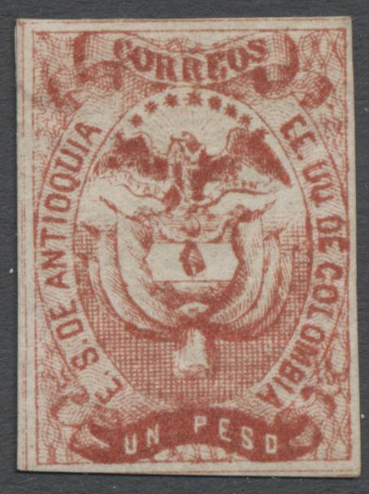
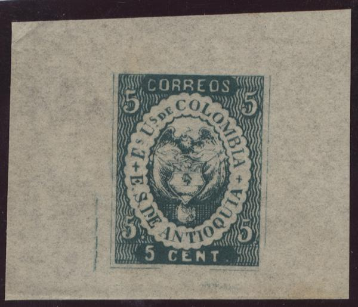
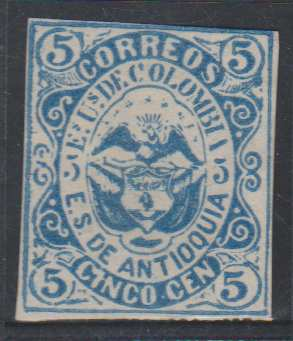
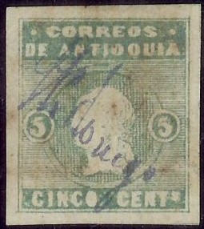
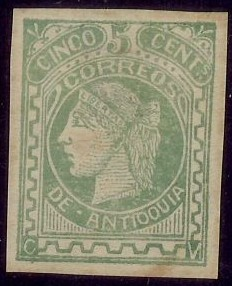
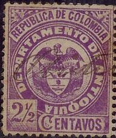
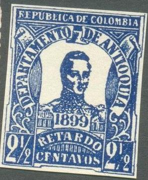
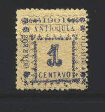
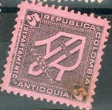

Return To Catalogue - Colombia overview
Note: on my website many of the
pictures can not be seen! They are of course present in the
catalogue;
contact me if you want to purchase it:
Colombia consisted of:
Antioquia, Bolivar, Boyaca, Cauca, Cundinamarca, Magdalena,
Santander, Tolima. Every province, except Cauca and Magdalena
issued its own stamps. The city of Bogota issued stamps also.
Most early stamps of Antioquia were cancelled by hand (these are not fiscal cancels).
2 1/2 c blue 5 c green 10 c violet 1 P red
Value of the stamps |
|||
vc = very common c = common * = not so common ** = uncommon |
*** = very uncommon R = rare RR = very rare RRR = extremely rare |
||
| Value | Unused | Used | Remarks |
| 2 1/2 c | RRR | RRR | |
| 5 c | RRR | RRR | |
| 10 c | RRR | RRR | |
| 1 P | RRR | RRR | |
With pencancel
Reprints exist, they were made in 1879 on bluish white paper. All the reprints (except 10 c) show diagonal scratches (since the plates were partly destroyed, information obtained from 'An illustrated catalog of all known reprints of officially issued postage stamps and postal stationery, 1840 to 1892' by Kalckhoff, Hilckes and Evans). Value of all the reprints: **. Furthermore, the reprint of the 5 c value was made from the plates of the 2 1/2 c.
(Reprints)
Forgeries, example:


A proof, made by Oswald Schröder
(Schroeder). I don't know the distinguishing characteristics of
this forgery. Schroeder made forgeries of all four values.
Schoeder also made a forgery of the 2 1/2 c value (sorry, no images available yet).
This might be a cut from an old stanp album with a forged cancel?
Sperati forgeries:


Sperati forgery of a 5 c stamp (front and backside).
This Sperati forgery has a diagonal line through the first 'O' of 'CORREOS'. Sperati made 'cancelled' stamps by applying a manual cancellation. Note the weaknesses in the bottom left and right area of the design. A Sperati 'blackprint' forgery of the 5 c value (taken by tehe British Philatelic Association from the negatives from wich Sperati made the cliches for his imitations, with 'SPERATI REPRODUCTION' printed on the backside):

2 1/2 c blue 5 c green 10 c violet 20 c brown 1 P red
Value of the stamps |
|||
vc = very common c = common * = not so common ** = uncommon |
*** = very uncommon R = rare RR = very rare RRR = extremely rare |
||
| Value | Unused | Used | Remarks |
| 2 1/2 c | *** | *** | Reprint: * |
| 5 c | *** | *** | Two types: '5' different (solid or shaded) Reprint: * |
| 10 c | R | *** | Reprint: * |
| 20 c | R | R | |
| 1 P | R | R | Reprint: ** |
1 P with pencancel.
Reprints exist, for more information see: 'An illustrated catalog of all known reprints of officially issued postage stamps and postal stationery, 1840 to 1892' by Kalckhoff, Hilckes and Evans.


This is a reprint of 1879, there are traces of scratches in the
upper left corner, which seem to be identical for every reprint.
The colour of the second reprint is wrong; blue instead of violet
(phantasy "error").
The 1 P was also reprinted in 1879 on bluish paper aswell as one type of the 5 c (also on bluish paper). Another reprint was made on white paper in 1881 of the values 2 1/2 c, 10 c and 1 P; the design has been changed slightly because of the retouching of damaged plates. There is also a 'phantasy' reprint of the 10 c value, in the non-existant colour blue (see image above).
Forgeries, reduced sizes. The 10 c has the design of the genuine
20 c.

Another forgery of the 5 c value
The American Journal of Philately of February 20,
1875, page 26 attributes these forgeries to Spiro:
Antioquia. The 1869 series of these stamps has been imitated
by Spiro, of Hamburg, who, taking for their motto dum spiro
spero, are ever hoping for new issues, that they may imitate the
same, to their own great profit. The forgeries are very
second-class, and, briefly, may be distinguished by the absence
of rays above the eagle in the 5c. and 10c. In the original 2
1/2c, 5c, 10c, and 20c, the head of the condor is very small, and
the wings are shaded all over, except the top of the right one in
the 5c and 20c. The stars (nine in number), are very large in the
5c ; those on the 2 1/2 c and 10c are smaller, whilst those on
the 20c, are smallest, and closest together; the forgery of the
20c, being printed from the 10c die, can be at once detected by
the two labels round the arms, which in the real 20c form a
continuous oval. We have seen no forgery of the 2 1/2c. ; we may
further add that there are no rays behind eagle in either 2 1/2 c
or 20c genuine ; so their absence can only prove the badness of
suspected 5c and 10c.

Forgery of the 1 P value.

This forgery exists in different shades of brown.

5 c forgeries. Note the slanting left top '5'. The last two
images show this forgery in blue color. I've seen it cancelled
with a pattern of dots forming a square. I've also seen this
forgery in the color lilac.
Bogus colors and values. The 2 c was made by the same forger as
the 10 c. I've seen the 10 c also in the color green (same
forger).


1 c green 5 c green 10 c violet 20 c brown 50 c blue 1 P red 2 P black on yellow 5 P black on red
Value of the stamps |
|||
vc = very common c = common * = not so common ** = uncommon |
*** = very uncommon R = rare RR = very rare RRR = extremely rare |
||
| Value | Unused | Used | Remarks |
| 1 c | ** | ** | |
| 5 c | *** | ** | |
| 10 c | *** | *** | |
| 20 c | ** | ** | |
| 50 c | * | * | |
| 1 P | ** | ** | |
| 2 P | *** | *** | |
| 5 P | R | R | |

I've been told that this is a forgery of the 10 c value, I have
no further information.


(Reduced size)
1 c black on green 1 c black (1877) 1 c lilac (1885) 1 c green (1885) 2 1/2 c blue 10 c violet (1879)
Value of the stamps |
|||
vc = very common c = common * = not so common ** = uncommon |
*** = very uncommon R = rare RR = very rare RRR = extremely rare |
||
| Value | Unused | Used | Remarks |
| 1 c black on green | ** | ** | Three types of green paper |
| 1 c black | * | * | |
| 1 c lilac | ** | ** | |
| 1 c green | ** | ** | |
| 2 1/2 c | * | * | |
| 10 c | RRR | RRR | |

Plane and lined background
5 c green (plane background, value green) 5 c green (lined background, value white, 1876)
Value of the stamps |
|||
vc = very common c = common * = not so common ** = uncommon |
*** = very uncommon R = rare RR = very rare RRR = extremely rare |
||
| Value | Unused | Used | Remarks |
| 5 c | *** | *** | Value green |
| 5 c | *** | *** | Value white |

10 c violet
Value of the stamps |
|||
vc = very common c = common * = not so common ** = uncommon |
*** = very uncommon R = rare RR = very rare RRR = extremely rare |
||
| Value | Unused | Used | Remarks |
| 10 c | *** | *** | |

(Forgery of this stamp)
Other forgery of this stamp:
(Forgery, reduced size)

2 1/2 c blue 2 1/2 c green 2 1/2 c black on yellow
Value of the stamps |
|||
vc = very common c = common * = not so common ** = uncommon |
*** = very uncommon R = rare RR = very rare RRR = extremely rare |
||
| Value | Unused | Used | Remarks |
| 2 1/2 c blue | ** | ** | |
| 2 1/2 c green | ** | ** | |
| 2 1/2 c black on yellow | *** | *** | |


5 c green 5 c violet 10 c violet 10 c red 20 c brown
Value of the stamps |
|||
vc = very common c = common * = not so common ** = uncommon |
*** = very uncommon R = rare RR = very rare RRR = extremely rare |
||
| Value | Unused | Used | Remarks |
| 5 c green | ** | ** | |
| 5 c violet | *** | ** | |
| 10 c violet | RR | R | |
| 10 c red | ** | ** | Seems to exist with error 'CORRLOS' |
| 20 c | ** | ** | |
5 c brown 5 c yellow 5 c green 10 c green 10 c blue on blue 10 c lilac 20 c blue
Value of the stamps |
|||
vc = very common c = common * = not so common ** = uncommon |
*** = very uncommon R = rare RR = very rare RRR = extremely rare |
||
| Value | Unused | Used | Remarks |
| 5 c brown | R | *** | |
| 5 c yellow | *** | *** | |
| 5 c green | RR | RR | |
| 10 c green | *** | *** | |
| 10 c blue on blue | *** | *** | |
| 10 c lilac | RR | RR | |
| 20 c blue | *** | *** | |
I've been told that the next stamp is a forgery:



1 c green on red 1 c red on lilac (1887) 2 1/2 c black on yellow 2 1/2 c lilac on red (1887) 5 c blue on yellow 5 c red on green (1887) 5 c red on yellow (1888) 10 c red on yellow 10 c brown on green (1887) 20 c violet on yellow 50 c brown on yellow 1 P yellow on green 2 P green on lilac
A misprint of the 50 c exists; 50 c red on yellow instead of 50 c brown on yellow. In the sheets of the 2 1/2 c black on yellow and 10 c red on yellow also an error exists, but was scratched out, so that one stamps with no inscription exists on these sheets.
Value of the stamps |
|||
vc = very common c = common * = not so common ** = uncommon |
*** = very uncommon R = rare RR = very rare RRR = extremely rare |
||
| Value | Unused | Used | Remarks |
| 1 c green on red | ** | ** | |
| 1 c red on lilac | * | * | |
| 2 1/2 c black on yellow | ** | ** | |
| 2 1/2 c lilac on red | ** | ** | |
| 5 c blue on yellow | *** | *** | |
| 5 c red on green | *** | *** | |
| 5 c red on yellow | *** | *** | |
| 10 c red on yellow | *** | *** | |
| 10 c brown on green | ** | ** | |
| 20 c | *** | *** | |
| 50 c | *** | *** | |
| 1 P | *** | *** | |
| 2 P | *** | *** | |
(Reduced sizes)
1 c black on red 2 1/2 c black on blue 5 c black on yellow 10 c black on green 10 c brown (1893) 20 c blue 50 c green 50 c brown 1 P red 2 P black on red 5 P black on red
Value of the stamps |
|||
vc = very common c = common * = not so common ** = uncommon |
*** = very uncommon R = rare RR = very rare RRR = extremely rare |
||
| Value | Unused | Used | Remarks |
| 1 c | * | * | |
| 2 1/2 c | * | * | |
| 5 c | ** | ** | |
| 10 c black on green | ** | ** | |
| 10 c brown | * | * | |
| 20 c | *** | *** | A misprint 20 c brown (colour of 50 c) exists: RRR |
| 50 c green | *** | *** | |
| 50 c brown | *** | *** | |
| 1 P | *** | *** | |
| 2 P | RR | RR | |
| 5 P | RR | RR | |
Normally these stamps are perforated 13 1/2, but imperforate stamps of the values 1 to 10 c exist, example:


2 1/2 c black on yellow 5 c black on yellow 10 c black on yellow 10 c black on red 20 c black on yellow
For the specialist: there are 20 varieties of the 5 c and 10 varieties of all other values.
Value of the stamps |
|||
vc = very common c = common * = not so common ** = uncommon |
*** = very uncommon R = rare RR = very rare RRR = extremely rare |
||
| Value | Unused | Used | Remarks |
| 2 1/2 c | *** | *** | |
| 5 c | *** | *** | |
| 10 c black on yellow | R | R | |
| 10 c black on red | R | R | |
| 20 c | R | R | |
Forgeries seem to exist, I have no further information.


1 c brown on brown 1 c blue (1893) 2 1/2 c violet on lilac 2 1/2 c green (1893) 5 c black on grey 5 c red (1893)
Value of the stamps |
|||
vc = very common c = common * = not so common ** = uncommon |
*** = very uncommon R = rare RR = very rare RRR = extremely rare |
||
| Value | Unused | Used | Remarks |
| 1 c brown on brown | ** | ** | |
| 1 c blue | c | c | |
| 2 1/2 c violet on lilac | ** | ** | |
| 2 1/2 c green | * | * | |
| 5 c black on grey | ** | ** | |
| 5 c red | c | c | |


2 c grey 2 c lilac 2 1/2 c brown 2 1/2 c grey 3 c red 3 c olive 5 c green 5 c orange 10 c violet 10 c brown 20 c yellow 20 c blue 50 c brown 50 c red 1 P blue and black 1 P red and black 2 P orange and black 2 P green and black 5 P lilac and black 5 P violet and black Registration stamp: inscription 'REGISTRO'
(Reduced size)
2 1/2 c red 2 1/2 c blue
Value of the stamps |
|||
vc = very common c = common * = not so common ** = uncommon |
*** = very uncommon R = rare RR = very rare RRR = extremely rare |
||
| Value | Unused | Used | Remarks |
| 2 c grey | * | * | |
| 2 c lilac | * | * | |
| 2 1/2 c brown | * | * | |
| 2 1/2 c grey | * | * | |
| 3 c red | * | * | |
| 3 c olive | * | * | |
| 5 c green | * | c | |
| 5 c orange | c | c | |
| 10 c violet | ** | ** | |
| 10 c brown | ** | ** | |
| 20 c yellow | *** | *** | |
| 20 c blue | ** | ** | |
| 50 c brown | *** | *** | |
| 50 c red | *** | *** | |
| 1 P blue and black | R | R | |
| 1 P red and black | R | R | |
| 2 P orange and black | RR | RR | |
| 2 P green and black | RR | RR | |
| 5 P lilac and black | RR | RR | |
| 5 P violet and black | RR | RR | |
| 2 1/2 c red | ** | ** | Registration stamp |
| 2 1/2 c blue | ** | ** | Registration stamp |
1/2 c blue 1 c grey 2 c brown 3 c orange 4 c brown 5 c green 10 c red 20 c black 50 c yellow 1 P black 2 P olive Registration stamp; inscription 'REGISTRO'
Reduced size
2 1/2 c blue Too late stamp; inscription 'RETARDO'
2 1/2 c green
Imperforate stamps are remainders.
Value of the stamps |
|||
vc = very common c = common * = not so common ** = uncommon |
*** = very uncommon R = rare RR = very rare RRR = extremely rare |
||
| Value | Unused | Used | Remarks |
| 1/2 c | vc | c | |
| 1 c | vc | c | |
| 2 c | vc | c | |
| 3 c | c | * | |
| 4 c | vc | c | |
| 5 c | vc | c | |
| 10 c | vc | c | |
| 20 c | c | c | |
| 50 c | c | * | |
| 1 P | c | * | |
| 2 P | * | ** | |
| 2 1/2 c | vc | c | 'REGISTRO'' |
| 2 1/2 c | c | * | 'RETARDO' |

2 1/2 c blue 'Retardo' Fournier forgery as it can be found in the
Fournier Album. I don't think this forgery was actually intended
to be sold as a forgery, but merely to illustrate his pricelists.
10 c lilac
Value of the stamps |
|||
vc = very common c = common * = not so common ** = uncommon |
*** = very uncommon R = rare RR = very rare RRR = extremely rare |
||
| Value | Unused | Used | Remarks |
| 10 c | vc | * | |


1 c red
1 c red ('1' very large)
1 c brown
1 c blue
1 c blue ('CENTAVO' just below '1')
2 1/2 c lilac (inscription 'RETARDO')
Value of the stamps |
|||
vc = very common c = common * = not so common ** = uncommon |
*** = very uncommon R = rare RR = very rare RRR = extremely rare |
||
| Value | Unused | Used | Remarks |
| 1 c red | ** | ** | |
| 1 c red | * | * | '1' very large |
| 1 c brown | ** | ** | |
| 1 c blue | ** | ** | |
| 1 c blue | *** | ** | 'CENTAVO' just below '1' |
| 2 1/2 c | ** | ** | 'RETARDO' |

(Reduced view)
1 c red 1 c blue 2 c blue 2 c violet 3 c green 4 c violet 5 c red 5 c black 10 c lilac 20 c green 30 c red 40 c blue 50 c brown on yellow 1 P violet and black 2 P red and black 5 P grey and black Registration stamp, inscription 'R'
10 c violet on blue Too late stamp, inscription 'RETARDO'
2 1/2 c violet Inscription 'AR'

5 c black on red
Value of the stamps |
|||
vc = very common c = common * = not so common ** = uncommon |
*** = very uncommon R = rare RR = very rare RRR = extremely rare |
||
| Value | Unused | Used | Remarks |
| 1 c red | c | c | |
| 1 c blue | c | c | |
| 2 c blue | c | c | |
| 2 c violet | vc | c | |
| 3 c | c | c | Error: 3 c blue: R |
| 4 c | c | c | |
| 5 c red | c | vc | |
| 5 c black | ? | ? | |
| 10 c | c | c | Exists in different type with smaller head: R |
| 20 c | * | * | |
| 30 c | * | * | |
| 40 c | * | * | |
| 50 c | * | * | |
| 1 P | ** | ** | |
| 2 P | ** | ** | |
| 5 P | ** | ** | |
| 10 c | * | * | Registration |
| 2 1/2 c | c | c | 'RETARDO' |
| 5 c | ** | ** | Exists in green? |

10 c black on red
Value of the stamps |
|||
vc = very common c = common * = not so common ** = uncommon |
*** = very uncommon R = rare RR = very rare RRR = extremely rare |
||
| Value | Unused | Used | Remarks |
| 10 c | *** | *** | |


4 c brown 5 c blue 10 c yellow 20 c violet 30 c brown 40 c green 50 c red 1 P grey 2 P violet 3 P blue 4 P red 5 P brown 10 P red
Value of the stamps |
|||
vc = very common c = common * = not so common ** = uncommon |
*** = very uncommon R = rare RR = very rare RRR = extremely rare |
||
| Value | Unused | Used | Remarks |
| 4 c | c | c | |
| 5 c | c | c | |
| 10 c | c | c | |
| 20 c | * | * | |
| 30 c | * | * | |
| 40 c | * | * | |
| 50 c | c | c | |
| 1 P | * | * | |
| 2 P | * | * | |
| 3 P | ** | ** | |
| 4 P | ** | ** | |
| 5 P | ** | ** | |
| 10 P | *** | *** | |
Postal stationary, example:
The inscription on the above card reads: "HACIENDO Y CORREOS DEL DEPARTAMENTO REPUBLICA DE COLOMBIA DEPARTAMENTO DE ANTIOQUIA'"


{kind=link}
{kind=link}
{kind=link}
{kind=link}
{kind=link}
{kind=link}
{kind=link}